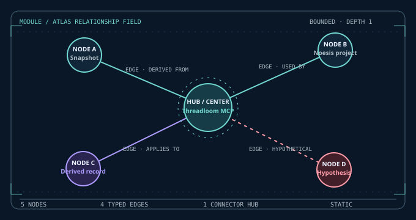

Empty
No matching resourcesExplain zero results and keep filters available.
Atlas · resources I know about
ATLAS · SYNTHETIC / PLANNED
Search and inspect stable identities without merging similar titles. Selected resource, version, snapshot, and scope stay pinned into every handoff.
Filters are illustrative service projections; unknown counts stay unknown.
List/table is the primary navigation path for keyboard and assistive technology.
| Resource | Kind / origin | Version / snapshot | Facets | Activity |
|---|---|---|---|---|
Threadloom MCPfixture-resource-threadloom-mcpSelected | MCP server local / managed | v2.4.18a41…c2d7 | examined referenced | 18 captured 1 deferred |
Threadloom docsfixture-resource-threadloom-docs | Documentation external / referenced | unknown version snapshot not examined | referenced only | unknown |
NOESIS projectfixture-resource-noesis-project | Project local / managed | current revision digest unavailable | used | 2 active |
Static local HUD over actual bounded records: one relationship module, five named nodes, four typed edges, and one center hub. No ambient particles or force simulation.

Module framing groups the bounded field; every node and edge maps to an ID and relation label. Geometry has no semantic distance.
LIST / TABLE ALTERNATIVE
8a41…c2d7local/project:noesisfixture-record-derived-001fixture-record-hypothesis-001 · unvalidatedThe selected Threadloom MCP context remains pinned. No data or revision changed.
State words distinguish zero, unknown, partial, stale, and unavailable.
Explain zero results and keep filters available.
Preserve entered search and selected scope.
Identity, version, snapshot, and scope persist across handoffs.
Show omitted count and continuation when supplied; never imply exhaustive review.
Keep prior evidence and offer inspect/refresh; never overwrite silently.
Offer retry or list-safe empty state. Never render fake nodes.